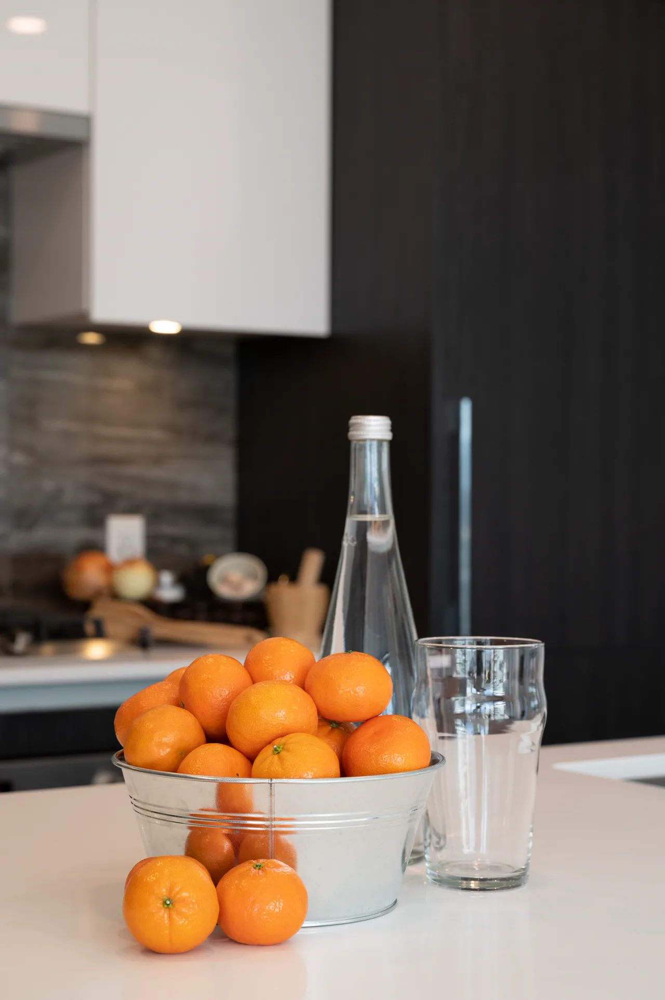
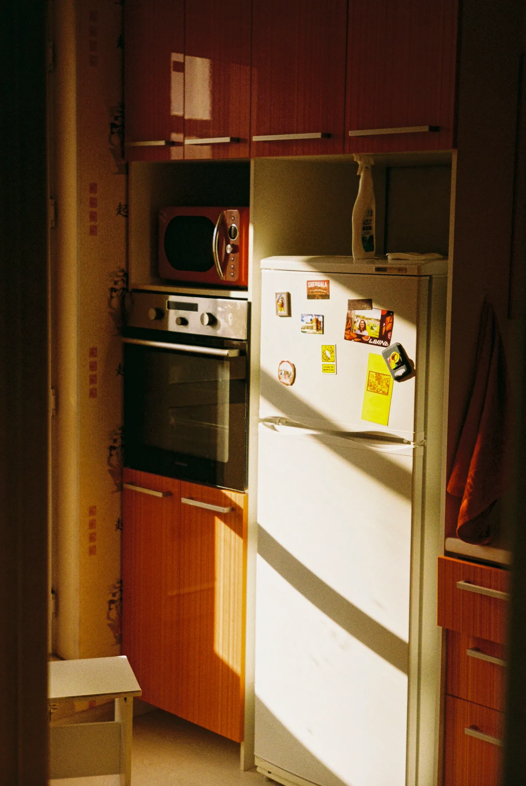
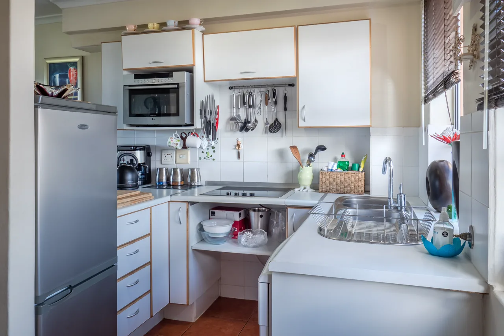

Şişli Mutfak Dolabı İmalatı & Özel Ölçü Tasarım.
Şişli, Nişantaşı ve Bomonti’deki tarihi yüksek tavanlı apartmanlar ve modern rezidanslar için mekanın her santimetresini değerlendiren akıllı mutfak tasarımları.

Şişli Özel İmalat Lüks Mutfak
2026 KoleksiyonuŞişli İlçesinde Hizmet Verdiğimiz Mahalleler
Şişli genelinde aşağıdaki mahallelerin tamamına lazerli ölçü aletimiz ve renk kartelalarımızla gelerek ücretsiz keşif yapıyoruz.
📍 Şişli Mahalle Listesi:
Şişli İçin 5 Popüler Kapak Teknolojisi
Mekanınıza, zevkinize ve bütçenize en uygun kapak modelini atölye kalitesiyle üretiyoruz.

Membran Kapak Mutfak
Kenar bandsız tek parça vakum presleme. Neme ve suya dayanıklı, country çıtalı veya düz modeller.

Matplus Kapak Mutfak
İpeksi kadife dokulu nanoteknolojik yüzey. Asla el veya parmak izi bırakmaz, leke tutmaz.

Akrilik Kapak Mutfak
Orijinal Senosan çizilmez akrilik tabaka. Cam parlaklığında derin yüzey, sararma yapmaz.

Lake Kapak Mutfak
Çok katmanlı poliüretan fırın boyası. Sınırsız RAL rengi, kusursuz ipeksi mat doku ve otel lüksü.

High Gloss Kapak
Işıltılı UV lak yüzey. Modern ve parlak mutfak arayanlar için bütçe dostu atölye alternatifi.

Banyo & Gardırop İmalatı
Mutfakla birlikte suya dayanıklı lake banyo dolabı, çamaşır dolabı ve füme camlı gardıroplar.
2026 Şişli Mutfak Dolabı Metretül Fiyat Tablosu
Şişli ve Nişantaşı bölgesindeki yüksek tavanlı tarihi binalar ile modern rezidanslara özel mutfak çözümleri sunuyoruz.
| Kapak Modeli | Yüzey & Gövde Özelliği | Mekanizma Standardı | 2026 Şişli Metretül Fiyatı | Montaj & Garanti |
|---|---|---|---|---|
| Membran Kapak Mutfak | 18mm E1 Neme Dayanıklı MDF + Eksiz Vakum Pres | Samet frenli menteşe & ray | ₺11.000 - ₺12.500 / mt | Şişli Ücretsiz Montaj & 5 Yıl |
| Matplus Leke Tutmaz Kapak | Nanoteknolojik mat, parmak izi tutmaz soft-touch | Blum / Samet frenli mekanizma | ₺12.500 - ₺13.800 / mt | Şişli Ücretsiz Montaj & 5 Yıl |
| Akrilik Ultra Parlak Mutfak | Senosan çizilmez akrilik plaka, cam parlaklığı | Blum tandembox çekmece rayı | ₺11.800 - ₺13.200 / mt | Şişli Ücretsiz Montaj & 5 Yıl |
| İpek Mat Lake Boya Mutfak | Poliüretan çok katmanlı fırın boya, sınırsız RAL rengi | Blum Aventos kalkar kapaklar | ₺14.000 - ₺16.500 / mt | Şişli Ücretsiz Montaj & 5 Yıl |
| High Gloss Ekonomik Seri | UV lak yüzey, ışıltılı parlaklık, bütçe dostu | Frenli sessiz menteşeler | ₺9.800 - ₺11.000 / mt | Şişli Ücretsiz Montaj & 5 Yıl |
Şişli Bölgesine Özel Mutfak Dolabı Tasarım Çözümleri
Nişantaşı, Teşvikiye, Bomonti ve Mecidiyeköy hattında yüksek tavanlara özel çift kat üst dolaplar, camlı vitrin aydınlatmaları ve neoklasik lake çıtalı kapak tasarımları dikkat çekmektedir.
Standart ölçülü hazır mobilyalar tavan ve kolon köşelerinde ölü alanlar bırakırken, Mutfak Dolabınız olarak Şişli ilçesindeki adresinize gelerek lazer metre ile milimetrik ölçü alıyor, kolon ve kiriş çıkıntılarını dolap içine gizleyerek tavana sıfır ferah depolama alanları yaratıyoruz.
Şişli İçin 4 Adımda Kusursuz Mutfak Süreci
Randevulu Lazer Keşif
Şişli adresinize numune kartelalarımızla gelip lazerli cihazla sıfır hata ölçü alıyoruz.
3D Fotogerçekçi Plan
Seçtiğiniz kapak ve tezgah kombinasyonunu 3D render olarak çizip onayınıza sunuyoruz.
Merkez Atölyede Üretim
Ümraniye tesisimizde CNC kesim, PUR kenar bantlama ve fırın boya ile mutfağınızı hazırlıyoruz.
1 Günde Temiz Montaj
Kendi usta marangozlarımız Şişli evinize gelerek 1 günde montajı tamamlar, tertemiz teslim eder.
Şişli Mutfak Dolabı İmalatı, Nişantaşı & Bomonti Modelleri ve 2026 Fiyatları
Şişli mutfak dolabı üretiminde Mutfak Dolabınız; Nişantaşı, Teşvikiye, Bomonti, Harbiye ve Kurtuluş semtlerindeki tarihi yüksek tavanlı apartmanlar ve modern kule rezidanslar için özel konsept tasarımlar yapmaktadır. Art-deco çıtalı lake kapaklar, pirinç gömme kulplar ve Bomonti loftlarına uygun endüstriyel ceviz-antrasit mutfaklar imal ediyoruz.
🏛️ Nişantaşı'nda Art-Deco Zarafet, Bomonti'de Loft Endüstriyel Şıklık
Nişantaşı'nın klasik art-deco ruhuna uygun özel freze desenli çıtalı lake kapaklar, pirinç fırçalanmış gömme profil kulplar ve mermer damarlı tezgahlar üretiyoruz. Bomonti'deki modern loft dairelerde ise antrasit metal detaylar, masif ceviz kaplamalar ve endüstriyel çizgileri harmanlayan cesur mutfaklar kuruyoruz. Şişli'nin kentsel yenileme binalarında dairelerin salonla birleşen mutfaklarında şık şaraplık modülleri ve tezgah üstü sürgülü panjur üniteleri uyguluyoruz.
✨ Özel Freze Desenli Lake Kapaklar ve Mermer Damarlı Tezgahlar
Fırın boya tesisimizde çok katmanlı poliüretan boyayla hazırlanan lake kapaklarımız, çizilmeye ve sararmaya karşı tam dayanıklıdır. Çimstone, Belenco ve porselen tezgah seçenekleri ile Nişantaşı zarafeti tamamlanır. Blum frenli mekanizmalar kullanım konforunu artırır.
⚡ Şişli İçin Ücretsiz Keşif, 3D Proje ve Doğrudan Fabrika Fiyatı
Şişli genelinde ücretsiz lazer keşif yapıyoruz. 3D çizimle onaylanan mutfağınız Dudullu atölyemizde hazırlanarak 1 günde tertemiz monte edilir ve 5 yıl garanti altına alınır.
Şişli İçin Doğrudan Atölyeden İmalat
Aracı mağaza komisyonu olmadan Ümraniye atölyemizde CNC makinelerimizde üretilen mutfaklarımızı ve usta işçiliğimizi canlı izleyin.
Şişli Mutfak Dolabı Sıkça Sorulan Sorular
Şişli bölgesindeki müşterilerimizin en çok sorduğu sorular ve yanıtları.
Şişli İçin Mutfak Dolabı Fiyatı Alın
Ölçünüzü veya mutfağınızın fotoğrafını WhatsApp üzerinden iletin; iç mimarımız 15 dakika içinde ihtiyaçlarınıza özel malzeme detaylarıyla metretül maliyetini çıkarsın.
Diğer Hizmet Bölgelerimiz
İstanbul'un her iki yakasında da imalat ve montaj ekiplerimiz aktif olarak hizmet vermektedir.